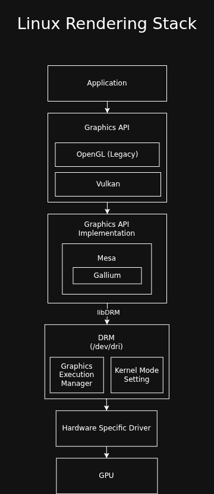
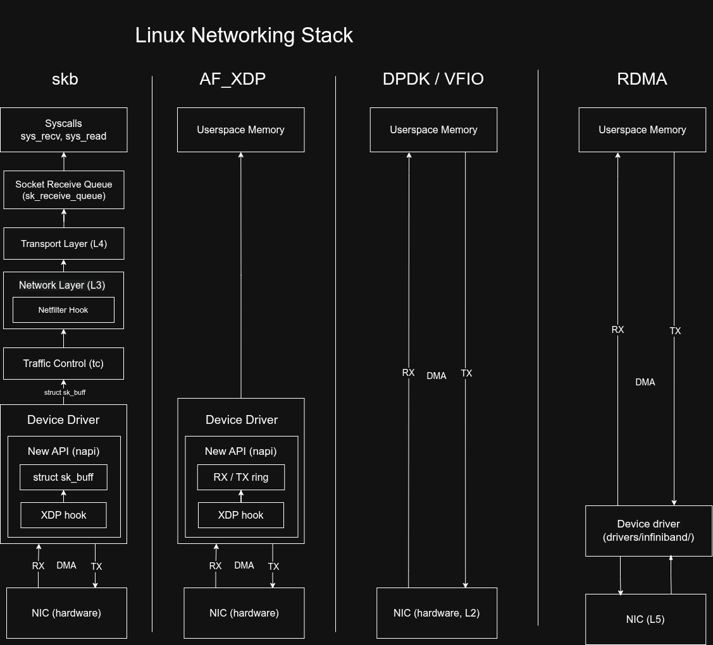
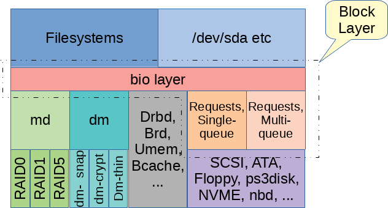
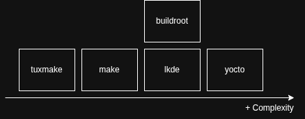

Linux Architecture Diagrams¶
Rendering Stack¶

Networking Stack¶

Storage Stack¶

To manage read and writes to the storage device, the Linux kernel uses the bio structure which connects the filesystem to a particular storage device.
In order to not issue many commands to the storage device, the bio manages a page cache. This is a copy-on-write cache which gets checked before accessing a page. If data gets written to a page, the cache gets dirty, and it can be flushed to the device.
Storage Performance Development Kit: fast and modern API to interact with NVMe devices
Unique Kernel Contributors per Subsystem¶
Subsystem |
Percentage |
Info |
|---|---|---|
Drivers (General) |
~55% - 60% |
This includes GPU (about 30% of all drivers), Network, Multimedia, and Sound. |
Networking (net/) |
8% - 10% |
Massive corporate focus from Meta, Google, and Mellanox/Nvidia. This is the core of the cloud. |
Filesystems (fs/) |
~7% - 8% |
This is the “Data Integrity” tier. Recent spikes come from Bcachefs (Kent Overstreet) and cloud-scale optimizations for NVMe. |
Core Kernel (kernel/, mm/) |
~5% |
The “Priesthood.” This is the smallest group of developers, but they have the highest gatekeeping standards. It includes scheduling and memory management. |
eBPF (kernel/bpf) |
~4% |
This is the fastest-growing niche. eBPF is becoming the universal “glue” for observability and networking, drawing in engineers from Distributed Systems. |
Arch Specific (arch/) |
~10% |
Mostly ARM64 and RISC-V churn. RISC-V is currently seeing a “gold rush” of first-time contributors. |
Source: gemini.
Build systems¶

Linux Kernel Module: raw kernel development quickstart
LKDE: light kernel dev framework
tmp105-driver: buildroot based driver
yocto: TODO